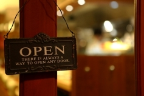

今の時期に美味しい旬の食材を使い、
創意工夫をこらしたメニューに仕上げて
ご提供いたします。
メニューは昼夜各コース一本のみで、
内容は日によって変わります。
Facebookのページにてメニューを紹介しています。
ぜひご覧下さい。
コース料金
昼 ¥2,100 (税込)
夜 ¥4,800 (税込)
営業時間
昼 12:00-13:30 (Last order)
夜 18:00-23:30 (Closed)
定休: 火曜日、水曜日の昼
席数が限られておりますので、
なるべくご予約下さい。
貸切のご予約は5日前まで。
4人掛 テーブル 1席
カウンター 8席
